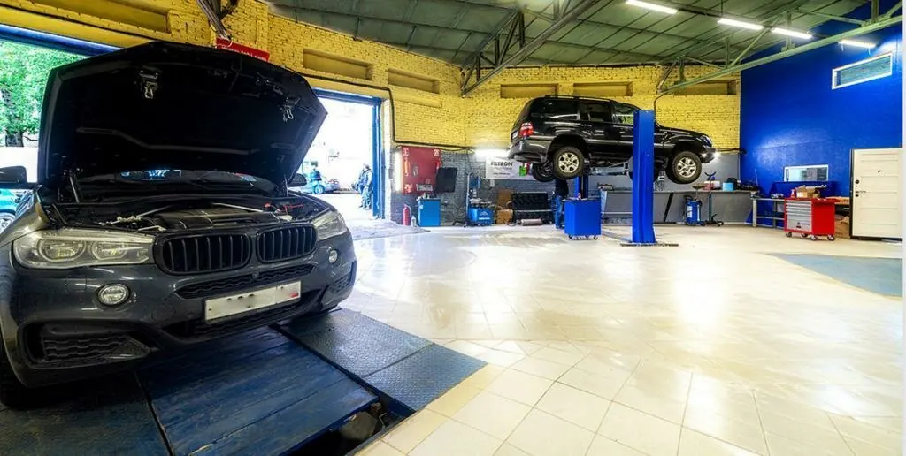

РАБОТЫ
Наш сервис



Ремонтируем двигатели, коробки, ходовую и электрику. Понятный прайс без навязанных услуг. 4.6 по 215 оценкам.
Записаться · +7 968 5587555Точные цены — по телефону.
DeLars — автосервис полного цикла по ремонту. ДВС, АКПП/МКПП, ходовая, тормоза, электрика, кузов, шиномонтаж. Цена до работ.